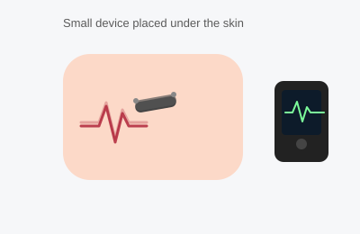

Implantable Loop Recorder
An implantable loop recorder (ILR), also called an insertable cardiac monitor, is a tiny device placed just under the skin of the chest that continuously records your heart's rhythm for up to several years. It is used to catch infrequent heart rhythm problems that are hard to capture with a short-term monitor, such as unexplained fainting or occasional palpitations.

Duration
About 15–20 minutes
Fasting
Not required (unless sedation is planned)
Sedation
Local numbing only; sedation optional
Recovery
Minimal — return to most activity the same day
What Happens During the Procedure
This is a quick, minor procedure usually done in the office or a procedure room. The skin over the left side of your chest is cleaned and numbed with a local anesthetic. Through a very small incision (often less than half an inch), the device — about the size of a small USB drive or AA battery — is inserted just beneath the skin. No wires go into the heart or blood vessels; the device simply sits under the skin and senses your heart's electrical signals through the skin, similar to an ECG. The small incision is closed, often without stitches (using skin glue or adhesive strips), and a dressing is applied.
Once in place, the device continuously monitors your heart rhythm. It automatically records episodes that meet certain criteria (such as a very fast, very slow, or irregular rhythm), and you can also trigger it manually with a handheld activator when you feel symptoms. The recorded information is periodically transmitted, often automatically and wirelessly through a home monitor, to your doctor's office for review.
What the Patient Should Know
- No special fasting is needed unless you and your doctor have planned to use sedation.
- You will feel some pressure and local numbing during insertion, but it should not be painful.
- Keep the incision site clean and dry for the first few days, as instructed.
- You will be shown how to use the handheld activator to record symptoms, and how the home monitor transmits data.
- The device is MRI-compatible (modern models), but always tell any other doctor or facility that you have one.
- The device can remain in place for several years and is removed in a similarly simple procedure once it is no longer needed or the battery runs low.
Recovery
Recovery is minimal. Most people can resume normal daily activity the same day, avoiding heavy lifting or vigorous arm movement on that side for a few days to let the incision heal. Mild bruising, tenderness, or a small bump at the site is normal and improves over the following days to weeks.
Why It Is Done
- Investigate unexplained fainting (syncope) when a cause has not been found with shorter monitoring.
- Detect infrequent or silent episodes of atrial fibrillation, especially after a stroke of unknown cause.
- Evaluate occasional palpitations that are not caught by a short-term heart monitor.
- Monitor heart rhythm long-term after a related procedure or diagnosis.
Reliable Sources
- American Heart Association, Cardiac Event Recorder
- NHLBI, Heart Tests
This page is for general education only and does not replace advice from your doctor. If you have questions about your own device, please contact the office.